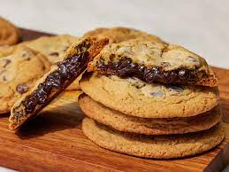

Fudge-Stuffed Chocolate Chip Cookies

Description
These are the great, classic chocolate chip cookies you know and love, packed with gooey goodness.
The hot fudge center stays soft even after your cooked have fully cooled.
Store in an airtight container at room temperature for up to 3 days.
Ingredients:
- ½ cup hot fudge topping
- 1 tablespoon hot fudge topping
- 2½ cups all-purpose flour, plus more for dusting
- 1 teaspoon baking soda
- 1 teaspoon kosher salt
- 1 cup unsalted butter, softened
- ¾ cup white sugar
- ¾ cup packed light brown sugar
- 2 large eggs, at room temperature
- 1 teaspoon vanilla extract
- 12 ounce package semisweet chocolate chips
Steps:
-
Line a small, rimmed baking sheet with parchment paper.
Using a 1/4-ounce (1/2 tablespoon) cookie scoop, portion hot fudge into 18 balls;
place on prepared baking sheet. Freeze, uncovered, until firm, at least 30 minutes, up to 12 hours.
-
Meanwhile, whisk together flour, baking soda, and salt in a small bowl.
-
Beat together butter, white sugar, and brown sugar in the bowl of a stand mixer fitted
with a paddle attachment on medium speed until light and fluffy, 3 to 4 minutes. With
mixer on low, add eggs, one at a time, beating until just combined after each addition.
Beat in vanilla until just combined. With mixer on low, gradually add flour mixture,
beating until just combined. Gently fold in chocolate chips until evenly distributed.
-
Cover cookie dough with plastic wrap and refrigerate until firm, at least 30 minutes or up to 12 hours.
-
Preheat the oven to 375 degrees F (190 degrees C). Line 3 large, rimmed baking sheets with parchment paper.
-
Using a 1-ounce (2 tablespoon) cookie scoop, portion 1 scoop of chilled cookie
dough, and place in the palm of a floured hand. Using a floured thumb, gently create
a cavity in the center of the cookie dough. Place 1 frozen fudge ball in center cavity;
scoop an additional cookie dough portion, and place on top of fudge ball, wrapping
excess dough around fudge ball and rolling in hands to seal.
-
Place on a prepared baking sheet; repeat process with remaining dough and fudge
balls, placing 4 inches apart on prepared baking sheets (6 per sheet).
-
Refrigerate, uncovered, until firm, at least 30 minutes, up to 12 hours.
-
Bake one baking sheet at a time in the preheated oven, until golden brown, 14 to 16
minutes. Let cool on the baking sheet for 5 minutes. Serve warm or transfer cookies
to a wire rack and let cool completely, about 30 minutes more. Repeat with remaining
stuffed cookie dough balls.
Back to main page